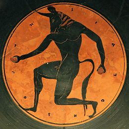
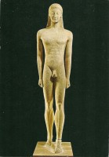
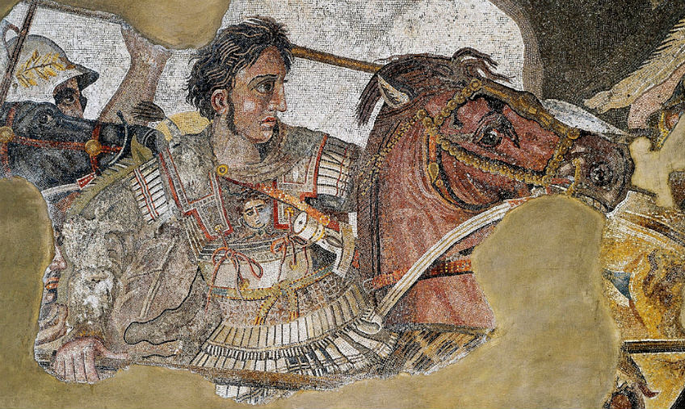

De Minoïsche beschaving
 De Minoïsche beschaving is de beschaving op Kreta die van 3000 tot 1500 v.C. bloeide. Van deze beschaving zijn grote paleiscomplexen gevonden. Deze paleizen hebben allemaal een weerwar van gangen en kamers. Dat is ook waar waarschijnlijk de mythe van de minotaurus in het labyrinth deels op gebaseerd is. De benaming van deze periode komt daarnaast van deze mythe. De paleizen hadden geen ringmuren, wat logisch is, aangezien de bevolking zich redelijk veilig kon voelen, omdat de vijand al van ver zichtbaar zou zijn en omdat ze van over de zee moesten komen.
De Myceense beschaving
De Myceense beschaving was de baschaving van ongeveer 1600 tot 1200 v.C. In deze periode vermengde de taal en cultuur van de indringers en de oorspronkelijk bewoners van Griekenland. De naam van deze periode komt misschien van de stad Mycene, maar hij beperkt zich niet tot deze stad.
In deze periode werd het lineair-B gebruikt als taal en er was een militaristische cultuur. De economie was vergelijkbaar met die van de Minoaïsche beschaving. Tijdens deze periode eindigde de Minoïsche beschaving ook, omdat de paleizen op Kreta werden verwoest. Deze periode eindigde waarschijnlijk doordat de burchten werden verlaten en nieuwe volken Griekenland binnentrokken.
De donkere eeuwen
Over deze periode is weinig bekend. Dit komt doordat het archeologisch materiaal heel beperkt is en doordat er weinig geschreven bronnen zijn.
Wat we wel weten is dat de economie en cultuur inzakten en dat alleen de bewerking van ijzer erop vooruit ging. Daarnaast waren de sociale verhoudingen afhankelijk van landbezit, dat betekent dat degene met het grootste stuk grond de leider is. Deze persoon werd de basileus genoemd. De herinneringen aan de Myceense beschaving werd bewaard door dichters, die hun verhalen doorvertelden.
Aan het einde van deze verhalen werden de periode van Homeros opgeschreven. De Grieken hadden namelijk weer beschikking over een schrift door contacten met de Feniciërs.
De Archaïsche periode
 Tijdens deze periode kwam de Griekse cultuur weer op en nam de bevolking flink toe. Deze bevolkingsgroei is de grootste oorzaak voor de andere veranderingen in deze periode. Hierdoor ontstonden bijvoorbeeld nieuwe groepen in de maatschappij. Deze verandering hield in dat er een groep ontstond met nieuwe rijken, deze personen werden rijk door hun investeringen in landbouwproducten of door handel. Daarnaast ontstond er ook een groep armen. De groep rijken zorgden er dan op hun plaats weer voor dat er een "tyrannos" aan de macht kwam in de stadstaten, omdat zij meer inzeg in het bestuur wouden.
De klassiek periode
In deze periode bloeit de stad Athene en vinden de Perzische en Pelopennsiche oorlogen plaats. Over deze twee punten kan je al informatie vinden bij Oorlogen en bij De stadstaat
Alexander de Grote
 Na de Pelopennsiche oorlog in de klassieke periode namen de Macedoniërs Griekenland over. De zoon van de Macedonische koning was Alexander de Grote. Alexander was voor zijn koningsschap leerling van Aristoteles en hij heeft een militaire opleiding gedaan, hij was dus na de dood van zijn vader een geweldige koning. Zo versloeg hij de Grieken, nadat zij in opstand kwamen, omdat ze dachten dat Alexander niet zo capabel was als zijn vader. Toen hij Griekenland veilig had gesteld, trok hij door naar Perzië, wat hij overnam. Hiermee begon zijn grote rijk, hij nam hierna namelijk Klein-Azië en Egypte over. Alexander begon daarna met zijn enorme expansie helemaal tot aan India. Op zijn tocht raakten zijn soldaten uitgeput waardoor hij bijna verplicht was terug naar huis te keren. Toen hij daar aankwam, werd hij plotseling ziek en stierf hij, waarna zijn rijk uiteenviel.
Alexander probeerde een groot rijk te stichten, waarin een groote overkoepelende cultuur heersde, deze cultuur heet het Hellenisme.